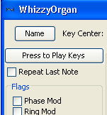

You can edit the sound of an instrument and preview it.
If the "WhizzyOrgan" instrument is not already open then click on the "Edit" button on the "17. Drawbar Organ" line.
Click on the "Press to Play Keys" button in the top left of the editor window to activate the keyboard.
Use your finger to play the letter keys on the left hand side of the ASCII keyboard, for example 'q', 'w', 'e'. Not every key is active. Each row contains a major scale in one octave.
Hold down the SHIFT key and play notes to transpose up two octaves.
Hold down a key to hear the full evolution of the note.
Change the attack rate of the amplitude envelope by moving the "attack" fader at the top right of the window so the value is > 500.
This will have caused the keyboard to lose focus. Click "Press to Play Keys" button again and hold the 'A' key down for a while. Hear how the instrument rises more slowly?
Check the "Repeat Last Note" box. it should play the last note repeatedly.
Change the attack rate of the amplitude envelope and notice how the sound is updated while the note is being played.
Uncheck the "Repeat Last Note" box to stop the sound.